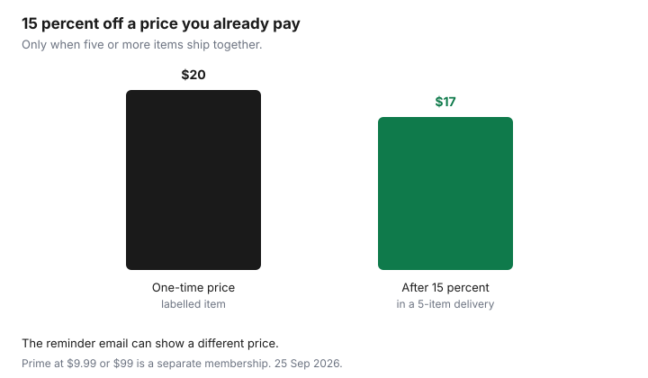

Subscriptions · Canada
Amazon Subscribe and Save Canada: When It Saves—and How to Pause or Cancel
Subscribe and Save looks like a coupon and behaves like a subscription. amazon.ca schedules the delivery, charges the card, and will keep doing it after the household has a cupboard full of detergent. The discount is real when the item is one you already buy on a schedule. It is a loss when the price jumps or the product was a one-time trial. Prime is a different switch. You can have Subscribe and Save without Prime, and you can have Prime without a single Subscribe and Save line.
Amazon’s Canada Subscribe and Save page, used 25 Sep 2026, says you save 15 percent when you receive five or more products in one auto-delivery to one address. Prime members get 20 percent on diaper subscriptions. The price you pay is the amazon.ca price on the day the order is processed, minus that discount. It can change every delivery. The reminder email is the warning. Prime’s membership fee, on the fee page used 24 Sep 2026, is $9.99 a month or $99 a year, plus tax. That decision is the Prime guide. A warehouse membership is the Costco guide. PC Express passes are the grocery delivery guide. This page does not redo those.
Disclosure: Amazon.ca storefront categories are an offer type. Saving Optimizer may earn a commission if we later add a partner link. We do not currently claim an Amazon partnership. Education only. The price in the reminder email is the price. A coupon banner is not a permanent discount.
Key takeaways
- 15 percent applies when five or more subscribed products ship together to one address. Fewer items can mean a smaller discount or none. Read the email.
- Good candidates are consumables you already replace on a timer: detergent, toothpaste, pet food you know the pet will eat. Bad candidates are anything you are trying once, or anything with a price that swings.
- Skip the next delivery, change the date, or cancel the item under Manage Your Subscriptions. Cancel is per item.
- Prime at $9.99 or $99 is not Subscribe and Save. Ending one does not end the other. Diaper subscriptions at 20 percent are a Prime perk on that page, not a reason to keep Prime if you do not need it.
- Once a quarter, open every active item and ask if the last shipment was used.
How Subscribe and Save discounts work on amazon.ca
On an eligible product you choose Subscribe and Save, a quantity, and a schedule from every two weeks to every six months. Amazon’s page says shipping on these deliveries is free, and there is no commitment in the sense that you can skip or cancel. The commitment you still have is attention. Before each delivery, a reminder shows the items, the price, and any discount. The terms say the charge is the amazon.ca price that day, minus the Subscribe and Save discount, plus tax, then any customer appreciation payment. Because the amazon.ca price moves, the amount on the card moves. The email is how you catch a jump before it ships.
The 15 percent line is specific. It is for five or more products in one auto-delivery to one address, not a promise that every single subscription is 15 percent off forever. A lone item can show a different discount, or a discount that disappears. Prime diaper subscriptions are the 20 percent exception on that page. A customer appreciation payment, for some third-party items when you hit five or more in one delivery, is described as 5 percent of the display price and shows up after tax as an amount paid by Amazon. It is not the same thing as the 15 percent. Do not add them in your head unless the email shows both.

Good candidates: consumables you already buy on a fixed cadence
The test is boring, which is the point. You already buy this item. You know the size. You know how long it lasts. The next purchase would have happened anyway, at this address. Laundry detergent, dish soap, toothpaste, a pet food the animal already eats, a coffee you finish every month. Put those on a schedule that matches the empty bottle, not a hopeful shorter one. Five such items arriving the same day are what unlock the 15 percent. If you only have two, you may be giving Amazon a subscription without the discount that justified it. Add a real third, fourth, and fifth, or skip the program and buy the two items when you need them.
Match the cadence to the household. Every two weeks is a lot of soap if the bottle lasts two months. Stretched schedules, out to six months, fit bulky refills. The first shipment is the one to check: right product, right size, a price that still beats the store you usually use. If the unit price loses to the flyer, cancel the item. Unit price is the same skill as the grocery aisle. A big bottle on subscribe is not a win if the per-load price is higher.
Bad candidates: prices that fluctuate or items you trial once
Amazon’s help says the price can go up or down, and the new price hits future shipments only, after it appears in the review email. That is fine for a stable staple. It is a poor fit for an item whose price you chase. A snack, a vitamin, or a gadget refill that was cheap the week you clicked Subscribe can be ordinary-priced on shipment three. If you would not buy it at the new price, skip or cancel before it ships. The terms also say a special promotional discount applies only during its dates. A first-delivery coupon is not the ongoing 15 percent. Read the expiry. Some coupons vanish if you change the delivery.
“I’ll try it on subscribe” is the other miss. A new coffee, a new shampoo, a bulk pack you have never finished. You have now scheduled the second and third bags before you know you like the first. Buy one, once. Subscribe only after the household has used it up and asked for another. Pantry overflow is the cost. The meal-kit guide is the separate question of whether a meal-kit trial beats cooking. Subscribe and Save is not that trial. It is repeat consumables.
| Rule | What it means in the cupboard |
|---|---|
| 15 percent | Five or more subscribed products in one delivery, one address. A single item may not get 15 percent. |
| 20 percent diapers | Prime members, diaper subscriptions, on Amazon’s page. Not a blanket Prime discount on every Subscribe and Save item. |
| Price on process day | The reminder email can show a higher price than the day you subscribed. Skip or cancel before it ships. |
| Free shipping on these deliveries | Amazon says shipping is free on Subscribe and Save. That does not make Prime’s $9.99 or $99 fee part of this discount. |
| No pause button named as “pause” | You skip a delivery, push the date, or cancel the item. There is not a separate program-wide pause. |
Pause, skip shipment, and cancel subscription item paths
Amazon’s Canada page does not offer a single “pause the whole program” switch. You change the item. All of this is under Manage Your Subscriptions, in Your Account.
- Skip the next delivery. Open the item and choose Skip next delivery. Use this when the cupboard is full and you still want the item later.
- Change the day or the schedule. Change delivery date, or edit the item and change the frequency, the next month, or the quantity. The change hits the next delivery. Stretching a two-week item to every two months is the usual fix.
- Cancel the item. Cancel subscription, then Confirm cancellation. Other items on the same day keep going. If cancelling this item drops you below five in that delivery, the 15 percent on the others can shrink. Look at the next reminder.
- Payment. You can change the card for the subscriptions at that address. Do that when the household card changes, so a cancelled item is not the only one you checked.
Skip or cancel before the order processes. After it ships, you are in return rules, not in the subscription screen. The reminder email is the deadline that matters. A quarterly review that happens the day after a shipment is a month late.
Stack carefully with Prime—membership is separate from S&S lines
Prime is the membership: shipping speed on ordinary orders, Prime Video, and the other benefits on the fee page. Subscribe and Save is a set of item schedules. Cancelling Prime does not cancel those schedules. Cancelling every Subscribe and Save item does not cancel Prime. The diaper 20 percent is one place they touch. If you kept Prime only because you thought it was required for the detergent discount, read the 15 percent line again. Five items in one delivery is the discount. Prime is an extra decision at $9.99 a month or $99 a year, before tax. Twelve months at $9.99 is $119.88, which is $20.88 more than $99, before tax. Keep Prime if the shipping and video math on the Prime guide works. Do not keep it as a shadow fee under the soap.
Amazon Household or a second adult on the account can add subscriptions to the same address. That helps the five-item threshold, and it also means one person can schedule an item the other person does not want. Once a quarter, look at the list together. A business reorder of paper towels is still a subscription. It belongs on the same review if it hits the same card.
Quarterly review of every active S&S item
Four times a year, open Manage Your Subscriptions and read every row. For each item: did we use the last shipment, is the next price still one we would pay, and does this delivery still have five items if we are counting on 15 percent? Cancel what failed. Skip what is stocked. Leave what is on a true cadence. Save nothing else. The review is twenty minutes because the list should be short. A list of thirty items is the audit telling you the program replaced the shopping list.
Put the review on the same calendar as the subscription audit. Subscribe and Save will not appear as “Netflix.” It appears as Amazon, sometimes as several charges in one week. The statement hunt catches the posting. This page decides whether the item stays. If the side hustle or the household no longer uses the product, cancel the item even if the discount looks clever. A 15 percent discount on something you will not open is a 100 percent loss of the money you spent.
Sources & date stamps
- amazon.ca Subscribe and Save store page, used 25 Sep 2026: 15 percent when five or more products arrive in one auto-delivery to one address. Prime members, 20 percent on diaper subscriptions. Schedules from every two weeks to six months. Skip, change date, change schedule, and cancel steps. Shipping described as free on these deliveries. Price can change and is shown in the reminder email. Customer appreciation payment of 5 percent of the display price on some third-party items when five or more ship together, applied after tax.
- Amazon.ca Help, Subscribe and Save terms, used 25 Sep 2026: the charge is the amazon.ca price that day minus the discount, plus tax. Discounts can change on future orders. Promotional discounts apply only during their dates. You can cancel before the order ships.
- Amazon Prime fee page, used 24 Sep 2026 on the Prime guide: $9.99 a month or $99 a year, tax extra. The marketing page used 25 Sep 2026 still showed $9.99 a month plus tax after a trial. Confirm the annual figure on the fee page before you renew.
- The $20 to $17 chart is a labelled 15 percent example, not a product’s live price. Costco membership and PC Express Subscribe and Save are different products, on the Food guides.
Frequently asked questions
Is Subscribe and Save always 15 percent off?
Amazon’s Canada page says you save 15 percent when five or more products arrive in one auto-delivery to one address. A single item can be a different discount. The reminder email shows the price you will pay.
Does cancelling Prime cancel Subscribe and Save?
No. Prime is the membership, $9.99 a month or $99 a year before tax on the fee page used 24 Sep 2026. Subscribe and Save items are cancelled one by one under Manage Your Subscriptions.
How do I skip a shipment without cancelling?
Manage Your Subscriptions, open the item, and choose Skip next delivery. You can also push the date or stretch the schedule. Do it before the order processes.
What should I subscribe to?
A consumable you already buy on a schedule, in a size you finish. Skip one-time trials and items whose price you have to chase. Five real staples in one delivery are what the 15 percent line describes.
The price went up after I subscribed. What now?
Amazon says the new price is in the review email and applies to future shipments. Skip or cancel that item if you would not buy it at the new price.